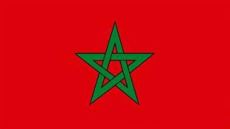
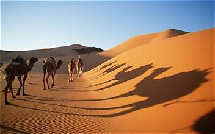
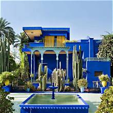

Marruecos es un país ubicado en África, el cual se destaca por su gran riqueza cultural y sus impresionantes paisajes, que van desde extensos desiertos hasta montañas y costas sobre el océano Atlántico y el mar Mediterráneo.
A su vez, la diversidad cultural en el territorio es muy amplia, ya que conviven las culturas árabe y amazigh, con tradiciones, costumbres e idiomas propios. No solo eso, sino que es un país con dos lenguas oficiales, el árabe y el amazigh, aunque también se hablan otros idiomas como el francés y el español en distintas regiones.
No obstante, pese a lo que se suele imaginar cuando pensamos en ciudades africanas, al observar la capital, Rabat, podemos descubrir una ciudad moderna y organizada, que combina construcciones contemporáneas con edificios históricos, convirtiéndola en uno de los principales centros culturales y políticos de África.
Manantial de libertad,
Luz de soberanía y paz,
Siempre serás nuestra patria,
Símbolo de gloria y esplendor.
Vives en nuestros corazones,
Como una estrella brillante,
Tu bandera siempre ondeará,
Con orgullo y dignidad.
¡Oh, patria mía!
Por ti viviremos y lucharemos,
Por tu unidad y grandeza,
Y siempre te honraremos.

